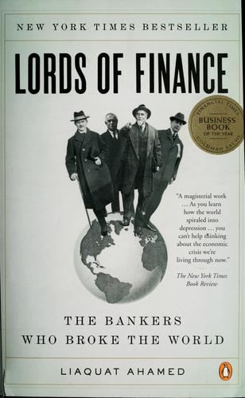

利亚卡特·阿哈迈德（Liaquat Ahamed）拥有哈佛大学和剑桥大学的经济学学位，曾在世界银行担任投资经理，后又在纽约的Fischer Francis Trees & Watts公司任首席执行官，在专业投资领域深耕逾二十五年。正是这一横跨学术与实务的独特背景，使他得以在《金融之王》中将宏观经济史的严谨与叙事文学的生动融为一体。本书出版于2009年，彼时全球正深陷金融危机，作者以四位中央银行行长——纽约联邦储备银行的本杰明·斯特朗、英格兰银行的蒙塔古·诺曼、法兰西银行的埃米尔·莫罗、德国国家银行的沙赫特——为主角，细密还原了他们在1920年代的决策如何一步步将世界推向1929年的大崩溃，进而酿成大萧条、催生了二战的温床。
长久以来，大萧条被视为天灾式的历史必然，是无数相互交织的力量共同作用的结果。阿哈迈德的核心论点却与此截然相反：这场经济浩劫，在相当程度上是少数几位掌握关键政策工具的人物做出错误决断的后果。四位行长都深信金本位制度的神圣不可侵犯，将捍卫货币与黄金的固定比价视为最高使命；他们在信贷紧缩之际仍坚守紧缩政策，在本该宽松之时却固执地收紧银根。全书通过扎实的史料还原和细腻的人物刻画，揭示出制度迷信与个人性格的局限如何叠加，在历史的关键节点产生了摧毁性的合力。
本书在叙事层面同样令人叹服。斯特朗的肺结核病史、诺曼的神经质个性、莫罗的民族主义骄傲、沙赫特的政治投机——阿哈迈德将这些人物写得立体而鲜活，令读者得以理解：历史并非抽象力量的运动，而是由有血有肉、有局限有偏见的人做出的一连串选择堆积而成。书中对1927年秘密会议的描写尤为精彩——四位行长在长岛密谈，就利率政策达成了后来被广泛批评为助推泡沫的共识，这一场景已成为金融史研究中的经典案例。
时任美联储主席的本·伯南克，在被金融危机调查委员会问及推荐什么书籍以理解2008年金融危机时，给出的唯一答案就是《金融之王》。这一背书并非偶然——伯南克本人即是大萧条研究的学术权威，他对此书的高度认可，折射出一代宏观经济学家从历史中汲取教训的集体努力。对于关注金融史、货币政策与经济危机根源的读者而言，本书是兼具可读性与深度的稀有文本，也是理解二十世纪最重要的经济事件不可绕过的参考。2010年，本书荣获普利策历史奖。